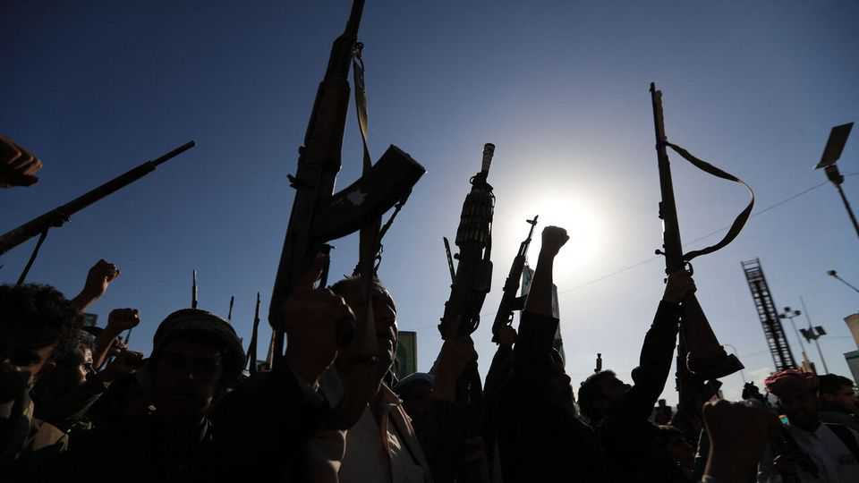
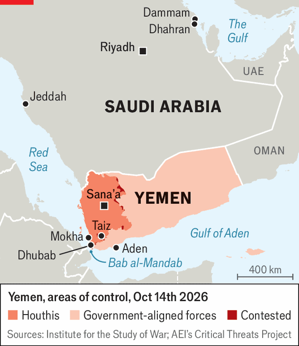

Saudi Arabia is increasingly under siege
The Saudis have no good options against deadly strikes by Yemeni rebels

Oct 15th 2026
SINCE 2014, when Yemen tipped into civil war, the country has become one of the most desperate places on earth. GDP per person has fallen by 58%. Most families cannot survive without foreign aid. More than 2m children under five are malnourished. Yet the Houthis, the Iran-backed rebels who are one side of the conflict, fight on. They care little about governing and extort enough money from areas they control to keep their war machine humming.
Now they are wagering that Saudi Arabia, which supports their opponents, will have far less tolerance for pain. For weeks the Houthis have escalated attacks on Saudi infrastructure. Strikes on Riyadh’s airport have halted flights to the Saudi capital. On October 13th the Houthis attacked the headquarters of Saudi Aramco, the state-run oil giant, in the eastern city of Dhahran. The kingdom feels under siege, just as it prepares to host its flagship investment conference this month.
In public, officials have tried to sound defiant. “The word fear, in the Saudi dictionary, does not exist,” the energy minister told a gathering of oil executives this week. But the Saudis have no good options. They will struggle to defeat the Houthis, and a long war will upend plans to diversify their economy and to make Riyadh a hub for finance and tourism. Yet the alternative is to cut a costly deal that invites, rather than deters, future Houthi threats.
The rebels seized most of Yemen’s population centres in 2014 and still hold them, despite a Saudi-led invasion the next year meant to drive them from power. A ceasefire in 2022 froze the front lines, but the wider Gulf war that America and Israel began in February made the truce unsustainable. By summer both sides were preparing for renewed fighting. Last month the Houthis launched an offensive that saw them seize much of Yemen’s south-western coast, including the port city of Mokha (see map).

The Saudis and their Yemeni allies began a counter-offensive this month. Progress has been slow. They have recaptured a strip of the coast, but for now they seem to have halted around the town of Dhubab, 40km south of Mokha. Typically in Yemen, campaigns start strong but soon grind into stalemate. Meanwhile, the Houthis are still trying to encircle Taiz, Yemen’s third-largest city and an anti-Houthi redoubt.
They have also resumed cross-border attacks on Saudi Arabia. Airports have been a particular target, with four deadly strikes on the capital’s airport in a single week. The worst came on October 10th, when missiles hit Terminal 3, which handles domestic flights. They killed 13 people and injured more than 300. Some of the casualties were pilgrims boarding a flight to Jeddah, the gateway to Islam’s holiest sites.
It is unclear why the Saudis were unable to intercept the missiles. They have advanced air-defence systems, including American-made THAAD and Patriot batteries. Like many other countries in the region, however, they are concerned about dwindling supplies of interceptors after almost eight months of war. The Houthis have also started to employ multi-layered attacks, using a mix of drones and missiles to overwhelm defenders. It did not help that the Saudis recently disabled the mobile-phone alerts that warn of incoming fire, apparently because too many locals found them disruptive (they were reinstated after the airport attack).
Riyadh’s airport is shut until at least October 18th. Though others are open, flights to Jeddah and Dammam are routinely put in hours-long holding patterns, which suggests ongoing Houthi attacks there as well. Many foreign carriers have cancelled flights to the kingdom. Europe’s aviation-safety agency has urged airlines to avoid a big part of Saudi airspace.
All this has disrupted what should be a busy time in the kingdom. October 11th was the start of the World Petroleum Congress, an energy summit hosted this year in Riyadh. The bosses of several big oil firms cancelled their attendance. Organisers still hope to go ahead with the Future Investment Initiative, which begins on October 26th. The annual event, organised by the crown prince, Muhammad bin Salman, and often dubbed Davos in the desert, usually draws a who’s who of global finance. But it is likely to become a “hybrid” event, with many guests joining remotely.
This is Saudi Arabia’s underlying dilemma in Yemen: its government has far more to lose than the battle-hardened Houthis. War will disrupt Vision 2030, Prince Muhammad’s effort to overhaul the economy. Last year the Saudi sovereign-wealth fund inaugurated a new airline, Riyadh Air, hoping to compete with Gulf super-carriers such as Emirates. Its planes were quietly moved out of Riyadh this week for safe keeping. Employees in the capital’s financial district have been told to work remotely until further notice.
Nor does war seem likely to succeed. The Saudis insist they are fighting in Yemen on behalf of its internationally recognised government, which is technically true: the un does not recognise the Houthis as legitimate rulers. But it is also something of a fiction, because the government is a husk. The president, Rashad al-Alimi, was installed in 2022 as part of a shake-up engineered by the Saudis. Ministers spend much of their time in Riyadh.
Yemen’s army exists in name only. Since 2015 the anti-Houthi forces have been a motley crew of militias, from Islamists to tribes to separatists who seek an independent south Yemen (as it was until 1990). Some were sponsored by Saudi Arabia, others by the United Arab Emirates (UAE). The latter were widely regarded as more effective, in part because the UAE was willing to embed special-forces units on the front lines to train and advise its proxies. The Saudis preferred to manage from afar.
But the Gulf powers fell out last year after Emirati-backed separatists seized a chunk of territory from the Saudi-supported camp. The UAE was forced to withdraw its forces, leaving the Saudis to run the war without their most capable ally. The results have been lamentable. As the Houthis advanced on Mokha, their foes fled. If the Saudis continue to wage war remotely, better results are unlikely.
They are eager for outside help. Saudi Arabia has invoked its mutual-defence pact with Pakistan and Turkey. The former has sent thousands of troops but insists they will not fight in Yemen. Prince Muhammad has asked Donald Trump to order American air strikes (so far, the president has demurred). Air power alone will not defeat the Houthis, however: after all, since 2024 they have been bombed by America, Britain, Israel and Saudi Arabia.
The other path is diplomacy. Since 2022 the Saudis have tried repeatedly to reach a deal with the Houthis. Whenever they seem close, the rebels add further demands. Now the Houthis feel they have the upper hand. Their terms will be steep: the Saudis would probably have to stump up billions of dollars and recognise Houthi rule in Yemen. Officials in Riyadh also worry, rightly, that making big concessions now will embolden the rebels to make fresh demands in the future.
Several people who have recently met Saudi leaders believe they will attempt to split the difference: try to retake Mokha, then sue for peace. But the Houthis get a vote too. If they manage to conquer Taiz while pummelling Riyadh with missiles, they may not feel compelled to stop. ■
Editor’s note (October 12th 2026): This story was updated after the fourth attack on Riyadh’s airport.